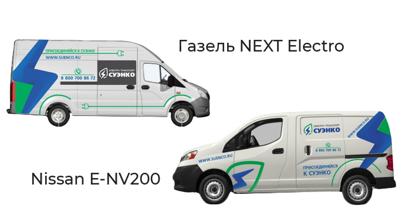
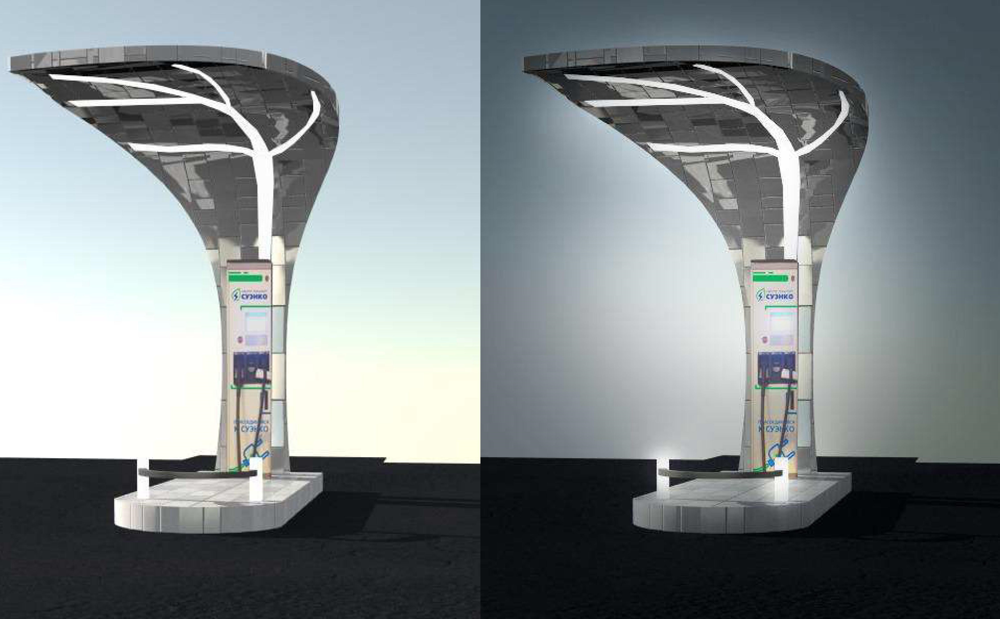
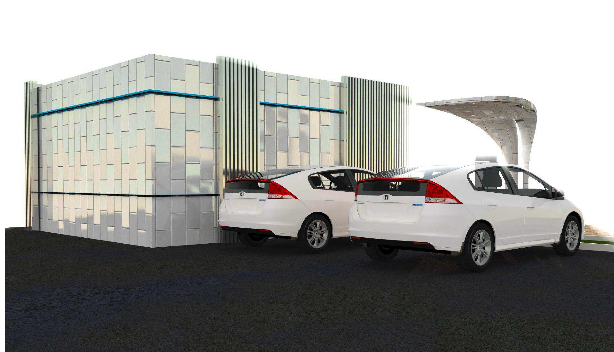
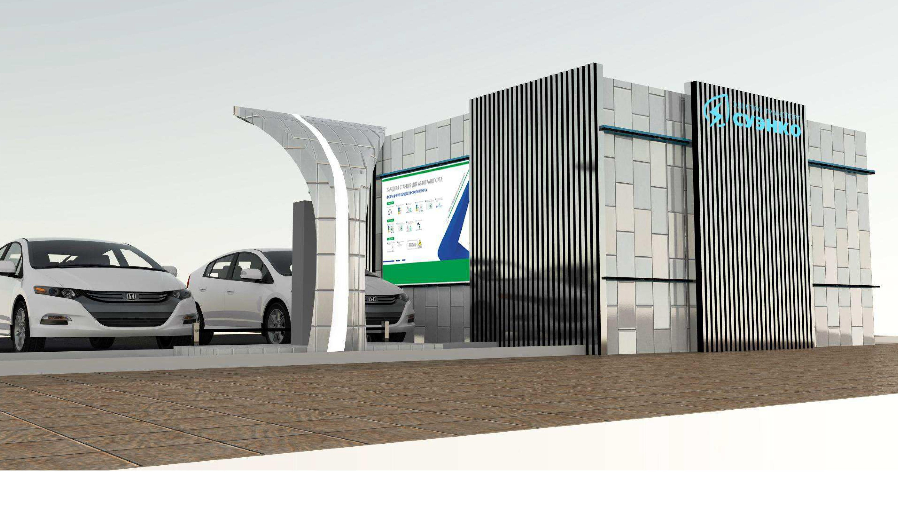
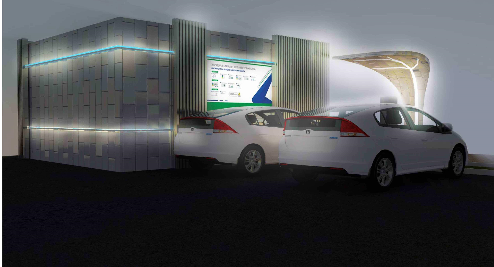
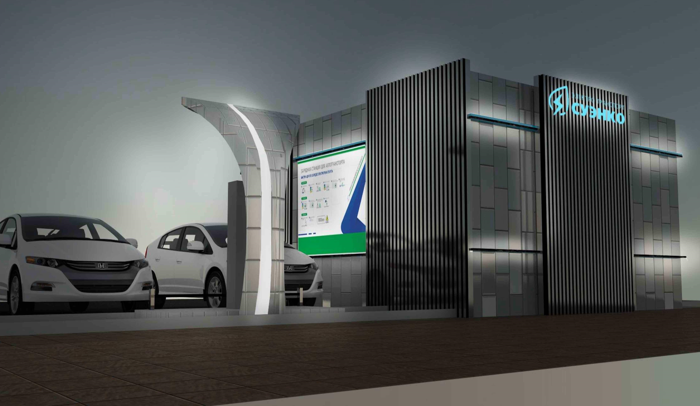

Электрокары
27 ноября 2017 года Администрация г.Тюмени и ПАО «СУЭНКО» подписали Соглашение о развитии
электротранспорта и повышении его доступности.
Соглашение закрепило намерение властей города и компании СУЭНКО создать площадку для взаимодействия
всех
заинтересованных сторон в развитии транспорта на электрических и гибридных двигателях.
В рамках выполнения соглашения ПАО «СУЭНКО»:
- приобрело электротранспорт для эксплуатации оперативно-выездными бригадами компании,
- запустило масштабный проект по созданию инфраструктуры для электротранспорта, в который входит
приобретение зарядных станций, их установка и техническое обслуживание в соответствии с
действующим
законодательством.
Электротранспорт СУЭНКО
В корпоративном парке СУЭНКО на балансе находятся 2 электромобиля: Nissan e-NV200 и Газель NEXT.

Электрозаправочные станции СУЭНКО
В 2018 году компания установит на территории парковок Администрации г. Тюмени, ТЦ Кристалл и Сити
Молл по три заправочные электростанции для жителей города.
Проекты электрозаправочных станций СУЭНКО

Станция зарядки электромобилей (СЗЭ) внешне и по конструкции похожа на бензоколонку АЗС
(Автомобильная заправочная станция), позволяющия произвести заправку автотранспорта
традиционными сортами углеводородного топлива — бензином и дизельным топливом

Станция зарядки электромобилей (СЗЭ) внешне и по конструкции похожа на бензоколонку АЗС
(Автомобильная заправочная станция), позволяющия произвести заправку автотранспорта
традиционными сортами углеводородного топлива — бензином и дизельным топливом

Станция зарядки электромобилей (СЗЭ) внешне и по конструкции похожа на бензоколонку АЗС
(Автомобильная заправочная станция), позволяющия произвести заправку автотранспорта
традиционными сортами углеводородного топлива — бензином и дизельным топливом

Станция зарядки электромобилей (СЗЭ) внешне и по конструкции похожа на бензоколонку АЗС
(Автомобильная заправочная станция), позволяющия произвести заправку автотранспорта
традиционными сортами углеводородного топлива — бензином и дизельным топливом

Станция зарядки электромобилей (СЗЭ) внешне и по конструкции похожа на бензоколонку АЗС
(Автомобильная заправочная станция), позволяющия произвести заправку автотранспорта
традиционными сортами углеводородного топлива — бензином и дизельным топливом